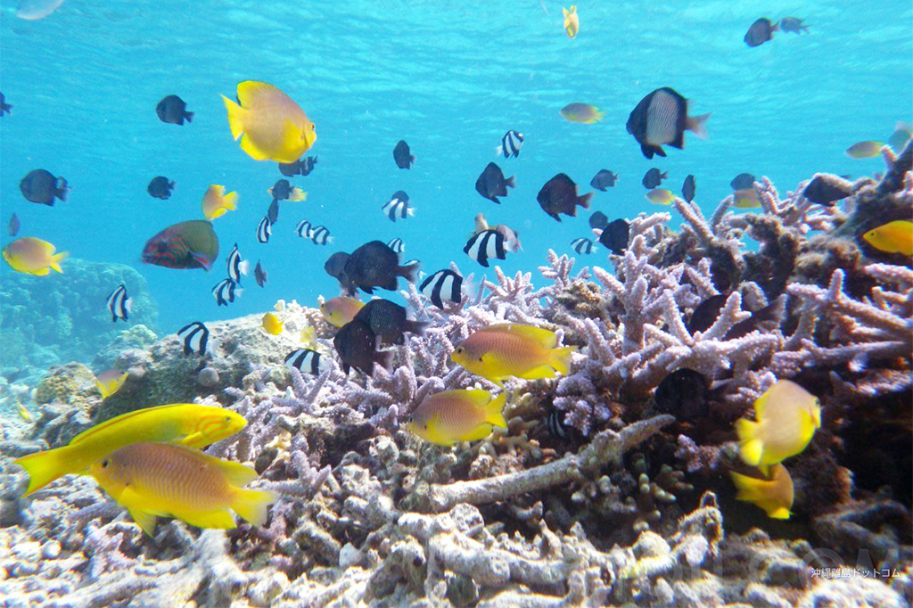

Javascript制作集
-
スライドショー：沖縄の風景

-
クラス付与：沖縄って手ごろに行けるんです
LCCを使えば航空券は年間を通して羽田、成田から往復１万５千円～３万円
連休に行きたい場合は半年前に予約すると、往復３万円以内で取れます。
連休を外して３ヶ月前に予約すると、往復１万５千円で取れます。
ホテルはMr.Kinjoがおすすめ1LDKをホテルにしたようなお部屋
3000円～9000円で泊まることができます。
那覇市内に何店舗かある有名なホテルです。
沖縄といえば海！離島でお魚と戯れることができます
離島に行くのってすごいお金かかりそうなイメージがすると思う方も多いと思います。
那覇市のフェリー乗り場「とまりん」から往復で4,090円でいけちゃいます！
 -
ホバーエフェクト：おすすめの３泊コース